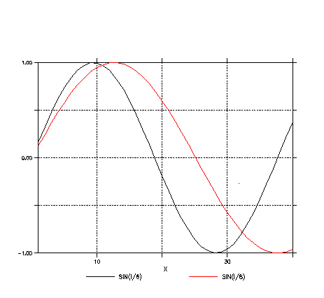

The coordinates on the axis may be anywhere within the cells defined by the upper and
lower cell bounds. There is no change to how Ferret uses the upper and lower bounds of of
axis cells (also known as boxes). They may be listed or otherwise accessed using the
pseudo-variables XBOXLO, XBHOXH, YBOXLO, etc.
- Ferret reads NetCDF files which have the bounds attribute. For instance, the ncdump
output for a short file might appear as follows:
netcdf irrx {
dimensions:
XAX = 4 ;
bnds = 2 ;
variables:
double XAX(XAX) ;
XAX:point_spacing = "uneven" ;
XAX:axis = "X" ;
XAX:bounds = "XAX_bnds" ;
double XAX_bnds(XAX, bnds) ;
float V(XAX) ;
V:missing_value = -1.e+34f ;
V:_FillValue = -1.e+34f ;
V:long_name = "SEA SURFACE TEMPERATURE" ;
// global attributes:
:history = "FERRET V5.60 4-Jun-04" ;
data:
XAX = 1, 2, 5, 6 ;
XAX_bnds =
0., 1.5,
1.5, 2.5,
2.5, 5.5,
5.5, 7. ;
V =
28.20222,
28.36456,
28.35381,
28.2165,
28.48889,
28.31556 ;
}
The CF standard allows for axes in a file that may have discontiguous bounds (the upper bound of
one cell is not the same as the lower bound of the next cell). Ferret does not allow such an axis.
When such a file is read, we arbitrarily choose to use the lower bounds throughout, with the upper
bound of the topmost cell to close the definition. This way all axes have contiguous upper and
lower bounds. A warning message is issued.
- A new qualifier DEFINE AXIS/BOUNDS allows us to define an axis from lists of coordinates and
bounds. The upper bound of each cell must be the same as the lower bound of the next cell.
The coordinates must be inside (or may coincide with) the cell bounds. Spaces are used here
to clarify the pairs of bounds, but are not necessary and do not affect the way the data is read.
Examples:
yes? DEF AXIS/X/BOUNDS xax = \
{1,2,5,6}, {0.5,1.5, 1.5,2.5, 2.5,5.5, 5.5,6.5}
yes? DEF AXIS/Z/DEPTH/BOUNDS zax = \
{0,20,50,75,120}, {0,10, 10,30, 30,60, 60,90, 90,150}
- To request that bounds be written for all of the axes of a variable, even for regular axes,
yes? SAVE/BOUNDS/file=bnds.nc var
- By default, the bounds attribute will be written to NetCDF files for all
irregular axes. Regular axes may also be saved with bounds by specifying SAVE/BOUNDS
Examples:
yes? USE climatological_axes
yes? LET v = L[GT=month_irreg] ! variable with an irregular axis
yes? SAVE/FILE=bnds.nc/L=1:4 v ! bounds attribute on time axis.
Note that we no longer need to use the qualifiers /RIGID /LLIMITS=
to write a file with an irregularly-spaced time axis. We will be able to append more
time steps to the file and keep the correct point spacing.
yes? SAVE/APPEND/FILE=bnds.nc/L=5:6 v
If there is a gap between time steps in the file and the first time step being
appended, Ferret inserts a void point whose bounds are the upper bound of the last time
in the file, and the lower bound of the first time step being appended. Append
steps 10:12 to the file, and then look at the variable and its coordinates:
yes? SAVE/APPEND/FILE=bnds.nc/L=10:12 v
yes? CANCEL VAR v
yes? USE bnds.nc
yes? LIST v, TBOXLO[gt=v], TBOXHI[gt=v], TBOX[gt=v]
DATA SET: ./bnds.nc
TIME: 01-JAN 00:00 to 31-DEC 05:49
Column 1: V is L[GT=MONTH_IRREG]
Column 2: TBOXLO is TBOXLO (axis MONTH_IRREG1)
Column 3: TBOXHI is TBOXHI (axis MONTH_IRREG1)
Column 4: TBOX is TBOX (axis MONTH_IRREG1)
V TBOXLO TBOXHI TBOX
16-JAN 12 / 1: 1.00 0.0 31.0 31.00
15-FEB 02 / 2: 2.00 31.0 59.2 28.24
15-MAR 17 / 3: 3.00 59.2 90.2 31.00
15-APR 05 / 4: 4.00 90.2 120.2 30.00
15-MAY 17 / 5: 5.00 120.2 151.2 31.00
15-JUN 05 / 6: 6.00 151.2 181.2 30.00
15-AUG 05 / 7: .... 181.2 273.2 92.00
15-OCT 17 / 8: 10.00 273.2 304.2 31.00
15-NOV 05 / 9: 11.00 304.2 334.2 30.00
15-DEC 17 / 10: 12.00 334.2 365.2 31.00
Time steps appended to this file will have a void point added as in the example
above, if there is a gap between time steps in the file and those being appended.
If appending data to a file which has a regular time axis and no bounds, if there is
a gap between the time steps in the file and those being appended, Ferret has
always written an axis which is irregular and which has large box sizes at the gap.
Now, Ferret will issue a note suggesting that bounds would define the time axis more
accurately.
yes? ! Change the setting to dashed lines yes? SET MODE grat:dash yes? PLOT/i=1:40 sin(i/6), sin(i/8)  yes? ! Further settings, in parentheses or quotes yes? SET MODE grat:(dash,COLOR=red) yes? set data etopo20 yes? shade/pal=greyscale rose
yes? ! different settings for large and small tics yes? SET MODE grat:"LARGE(COLOR=blue),SMALL(COLOR=lightblue)" yes? USE monthly_navy_winds yes? SET REGION/X=180/Y=0/T=1-may-1989:1-may-1992 yes? PLOT uwnd